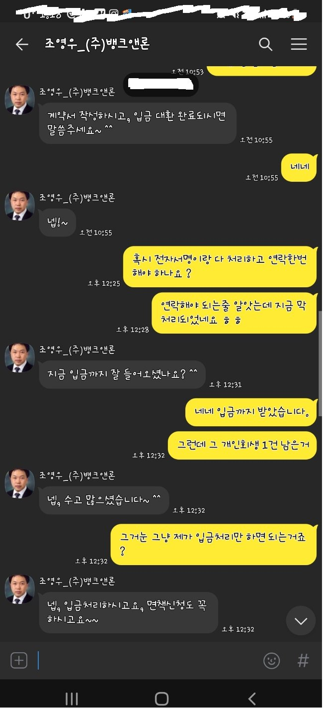

[채무통합] [개인회생중 대출] 조영우 이사와의 대출후기
제가 개인 회생 이후에도 집안이 좀 어렵다 보니 대출을 조영우 이사님께 도움 받아 진행하여 잘 지내고 있었고
채무가 너무 많아 하나로 통합하고 싶은데 좀처럼 진행이 되지 않았었습니다,
그런데 저번에 진행 한 조영우 이사님이 생각나 진행 요청 도움드리고 진행 하였는데
아예 안되었었는데 일부 채무 통합 완납처리 하면서 생활자금까지 해서 도움 받았습니다.
제가 그동안 시간이 너무 없어 지금 쓰는 후기가 너무 죄송하긴 하지만 그래도 잊지 않고 이제서라도 올립니다.
너무너무 감사합니다.!!
직장인/연소득 2500 그외 수입 / 세람저축은행 / 에이원(로니오) / 엠케이캐피탈
